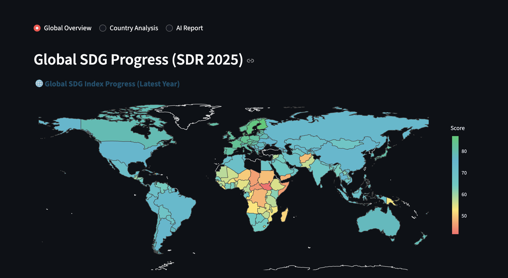
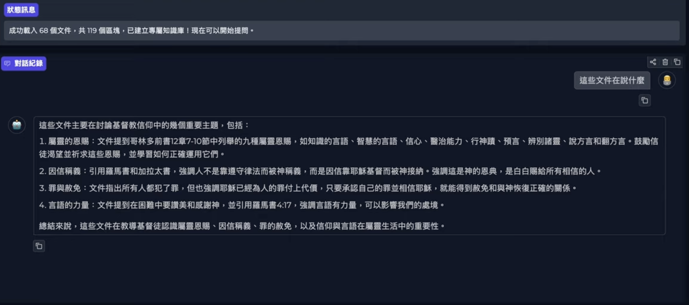
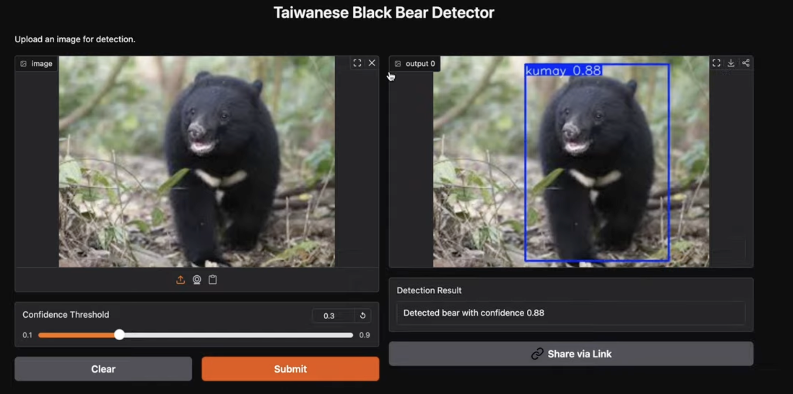
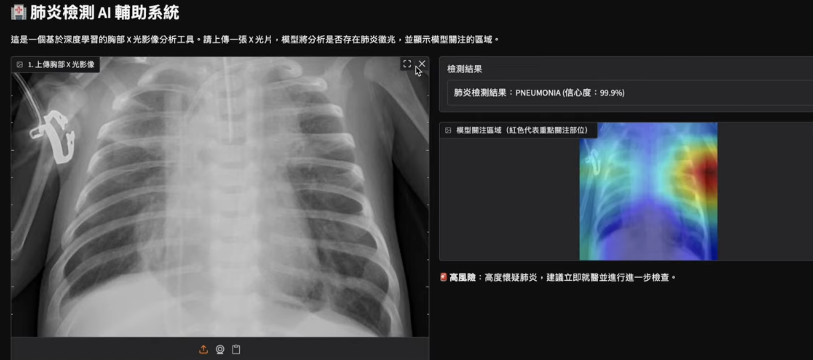

Nai-Song Lin AI portfolio

Global SDG Tracker AI (2025)
- 建構 AI 引擎，整合 SDR2025 數據 (166國、17 SDG目標)，生成多語言互動報告。
- 設計自動化數據管線，處理 5,225 行多維數據，支持趨勢與動態排名分析。
- 部署互動儀表板，優化 UX (年份滑桿、深度選擇)，減少 30% 生成耗時。

個人 RAG 知識庫問答系統
- 支援多格式 (PDF/DOCX) 上傳，結合 FAISS 向量庫與 LangChain 實現精準檢索。
- 整合 Azure OpenAI (GPT-4) 生成回答，透過 Prompt 控制有效降低幻覺。
- 展示端到端 AI 開發，含文檔分塊、嵌入與即時聊天記錄管理。

台灣黑熊物件偵測模型
- 基於 YOLOv8 訓練 14,000 張影像，應用於臺東預警系統，減少人熊衝突。
- F1 Score 達 0.85，成功降低 70% 誤報率。
- 部署 Gradio 介面，支援低光源與複雜背景下的高效率偵測。

肺炎檢測 AI 輔助臨床系統
- 基於 ResNet50 遷移學習，於 Kaggle X-ray 資料集達成 87% 分類準確率。
- 整合 Grad-CAM 視覺化熱圖，提升模型可解釋性，協助醫師精準定位病灶。
- 開發 Gradio Web App，支援即時影像上傳及風險分級建議。